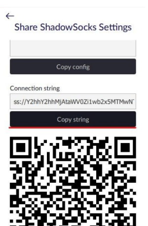
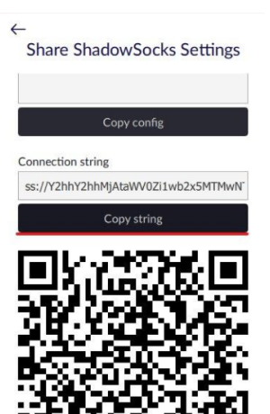
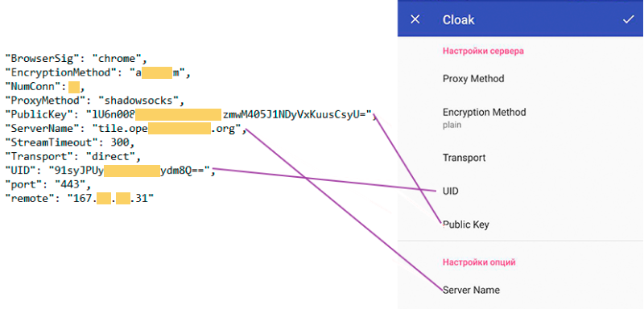

1. Покупаем VPS у любого хостинг-провайдера (Amnezia работает с любыми серверами с операционной системой Ubuntu (официально поддерживаемая версия - 20.04), так же поддерживается Debian 10).
2. Скачиваем приложение Amnezia на Windows версии 2.0.2, подключаемся через него к серверу. Вносим данные VPS в приложение, выбираем “Configure VPN protocols manually”, выбираем протокол OpenVPN over Cloak.
3. Устанавливаем на Android официальный клиент ShadowSocks от "Max Lv" из Google Play
4. Устанавливаем на Android плагин Cloak отсюда, файл в формате APK
Придется разрешить установку APK из неизвестных источников.
5. Открываем на Windows Amnezia - Выбираем протокол OpenVpn over Cloak - Share connection for Shadowsocks

 

6. Открываем на мобильном клиент ShadowSocks - Добавить профиль - Сканировать QR-код с клиента Windows, сканируем
7. Открываем на Windows Amnezia - Выбираем протокол OpenVpn over Cloak - Share connection for Cloak
8. Открываем на мобильном клиент ShadowSocks - Заходим в созданный профиль - Выбираем плагин Cloak - Настроить
9. Копируем и вставляем туда параметры: UID, Public Key и Server Name из Amnezia на Windows
Автор гайда: jolly_jack